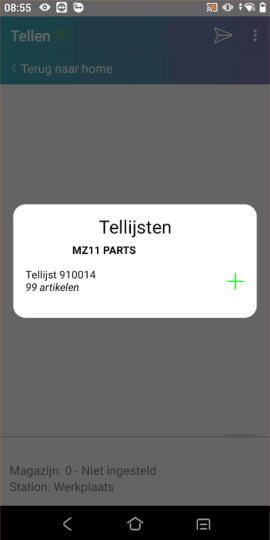

Ga naar Verwerken tellijst (AVT).
Geef een selectie op, of
-
Vink Willekeuring gekozen, max. 99 aan optioneel.
-
Vul het aantal in.
De artikelen uit de selectie verschijnen in de regels.
Geef in de kolom Correctie het juiste getelde aantal in.

-
Bij correctie aantal 0 wordt er niets verwerkt.
Afhankelijk van de instelling:
-
Kies voor de knop Verwerk lijst. (Bij gebruik tellen is nee).
-
De correcties zijn verwerkt.
-
-
Kies voor de knop Aanmaken teltaak.
-
De teltaak is aangemaakt.
-
-
Kies voor de knop Lijst naar scanner i.c.m. .
-
Bij de teltaken is een tellijst aangemaakt, met deze artikelen, voor de scanner.
-
Zie Barcode scanner Tellen.

-
- Op de Barcode app kan geen artikel verwijderd of toegevoegd worden bij een teltaak.
- Alle artikelen van de taaklijst moeten geteld worden.
- Als de taaklijst ontvangen is door de scanner, wordt taaklijst verwijderd uit Powerall, want die staat nu op de scanner.
-